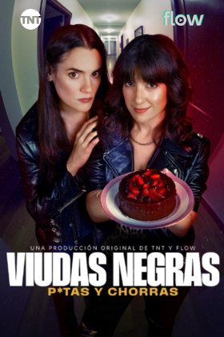
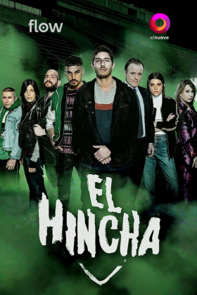

Streaming
TV 90s
Tiras 2000
Tiras 2010
Juveniles
Unitarios
SERIES EN STREAMING 2026
Todo
Series
Verticales
0 series y verticales
EN PRODUCCIÓN
0 series
Comedias en Streaming
Ficciones Verticales
Thrillers y Policiales
Actores Destacados en Streaming
Guillermo
Francella
Ricardo
Darín
Griselda
Siciliani
Juan
Minujín
Eugenia
Suárez
Carla
Peterson
Benjamín
Vicuña
Nicolás
Furtado
Pilar
Gamboa
Carla
Quevedo
Diego
Cremonesi
Natalia
Oreiro
Jerónimo
Bosia
Gustavo
Bassani
Bioseries
Dramas
Ficciones con múltiples temporadas
Thrillers Políticos
En Streaming y en TV (2000-Presente)
AMIA: El Fin de la Verdad

Viudas Negras: P*tas y Chorras
La Mente del Poder
Cris Miró (Ella)

El Hincha
Pequeñas Victorias, Perdidxs en la Tierra
Los Internacionales
Plataformas de Streaming